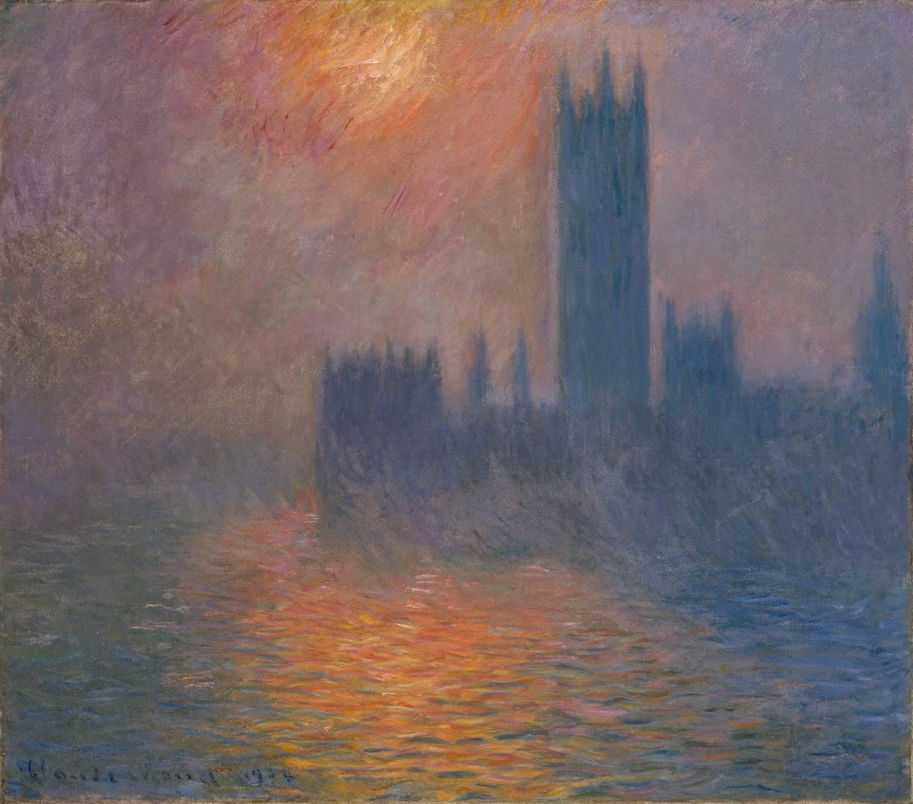

Houses of Parliament, Sunset

Palette
- Old lavender · your word: Mauve
- Payne's grey · your word: Denim
- Davy's grey · your word: Umber
- Deep taupe · your word: Sepia
- Café au lait · your word: Sepia
- Copper · your word: Ochre
Monet painted this motif 19 times from a terrace of St Thomas' Hospital, starting in 1900, and finished the London canvases in his Giverny studio. Researchers later found his suns placed accurately enough to date the pictures. A 2023 study linked the hazy, whitened light of his London views to coal-smoke pollution, though others see a change of style. Here the sky is mauve and violet-grey, the sun on the water a coppery ochre.
Image
Wikimedia Commons · Public domain

Hex values are screen approximations. Every page lists its sources.